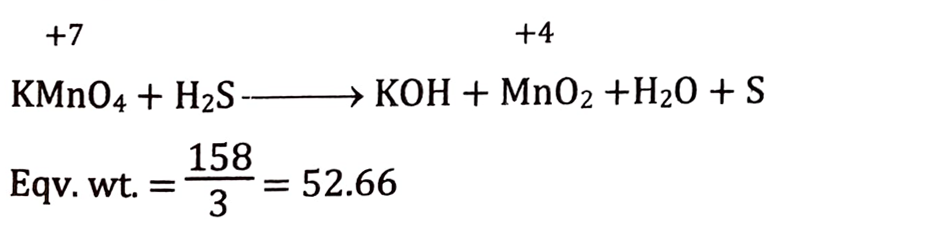

Quick Jump
Introduction
Volumetric Analysis is the process of determining the strength of unknown solution with the help of standard solution. It is a common laboratory method of quantitative chemical analysis to determine the concentration of an identified analyte (a substance to be analyzed).

Terms used in Titration
Titrant
The solution of known concentration used in titration which is generally taken in burette.
Titrand (or titrate)
The solution of unknown concentration used in titration which is generally taken in Titration flask.
Acidimetry
It is the process of determining the strength of an acid solution with the help of standard alkali solution (basic solution) in presence of indictor.
Alkalimetry
It is the process of determining the strength of an alkali solution (basic solution) with the help of standard acid solution in presence of indictor.
Endpoint (or Neutral point)
the point at which reaction completes as indicated by the change in colour of indicator, is called end point. It is the practical point.
Equivalence point
The point at which equivalent amount of titrant is neutralized by titrand. Theoretical end point is known as equivalent point.
Titration error
The difference between end point and equivalence point in titration
Indicator
The chemicals of substance which indicate the completion of reaction by changing its color. Example phenolphthalein, methyl orange, litmus paper, methyl red, etc.
Normality factor
It is the ratio of weight of the solute taken to the weight of the solute to be taken or the ratio of the practical weight to the theoretical weight.
Redox titration
The process of determining the strength of reducing agent with the help of standard
oxidizing agent and vice-versa is known as redox reaction or
titration.
Ex:Titration of KMnO₄ solution in acidic medium against standard
Oxalic acid solution.

Precipitation
Precipitation titration is a type of titration which involves the formation of precipitate during the titration technique

Equivalent Weight
Equivalent weight of a substance is the number of parts by weight of it which
combines or displaces directly or indirectly 1.008 parts by weight of hydrogen or 8
parts by weight of oxygen or 35.5 parts by weight of chlorine.
It is unit less but when expressed in gram, it is known as Gram Equivalent
weight

 2 x 1.008 parts of H₂ is displaced by 24/1.008 parts of Mg
2 x 1.008 parts of H₂ is displaced by 24/1.008 parts of Mg
Equivalent Weight of Acid
Equivalent weight of acid is that weight which is obtained by dividing its molecular
weight by number of replaceable hydrogen atoms present in 1mole of acid.

Equivalent Weight of Base
Equivalent weight of base is that weight which is obtained by dividing its molecular
weight by number of replaceable hydrogen atoms present in 1mole of acid.
Equivalent Weight of Oxidizing and Reducing agent
For example, the equivalent weight of KMnO₄ is different in different medium.
- In Acidic medium
- In Basic medium
- In Neutral medium 
- Reducing Agent
Concentration of solution
Percentage
W/W
It is defined as the mass of solute present in 100 gram of its solution. It is called % (W/W) i.e. percent weight by weight
For example, 2% (W/W) solution of NaOH represent 2 g of NaOH dissolved in 100 g of solution
W/V
Percentage concentration is also defined as the mass of solute present in 100 ml of its solution. It is called % (W/V) i.e. percent weight by volume
For example, 2% (W/V) solution of NaOH represent 2 g of NaOH dissolved in 100 ml of solution
V/V
Percentage concentration is also defined as the volume of solute present in 100 ml of its solution. It is called % (V/V) i.e. percent volume by volume
For example, 2% (V/V) solution of NaOH represent 2 g of NaOH dissolved in 100 ml of solution